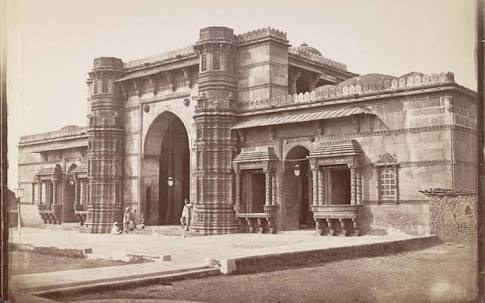

Timeline of Ahmedabad
- Century
- 1411 – On the banks of Sabarmati River, Sultan Ahmed Shah I laid the foundation of Ahmedabad, Manek Burj and Manek Chowk, Ganeshbari, Bhadra Fort, Muhurt Pol and Jama Masjid.
- 1413 – Construction of Bhadra Fort completed.

- 1423 – Construction of Jama Masjid, Ahmedabad completed.
- 1451 – Houj-E-Kutub or Kankaria Lake constructed.
- 1453 – Daria Khan's Tomb and dome constructed.
- 1454 – Construction of Shaking Minarets of Sidi Bashir Mosque near Gomtipur.
- 1486 – Construction of city walls by Mehmud Begada.
- 1498 – Adalaj Stepwell with exquisite stone carving.
Century
- 1514 – Arrival of Spanish traveler Barbosa and construction of Rani Sipri Masjid.
- 1535 – Humayun captured Ahmedabad and ruled for nine months. Bahadurshah recaptured.
- 1555 – Arrival of Arabian historian Udadbir.
- 1572 – Sidi Saiyyed mosque with the world-famous carved stone tree constructed.
- 1572 – Akbar captured the city, end of the sultanate.
- 1586 – Meeting of Sant Dadu and Akbar, Akbar recaptured the city from Muzaffarshah.
Century
- 1614 – Arrival of the first representative of the British East India Company.
- 1618 – Arrival of Jehangir,letters written to the British King James.
- 1621 – Shah Jahan constructed Shahibag Palace (presently Commissioner's Bungalow) and the Shahi Gardern.
- 1622 – The Jain merchant Shantidas Jhaveri starts the construction of the Chintamani Parshvanath temple at Saraspur.
- 1644 – Aurangzeb becomes the subahdar (Governor) of Ahmedabad. He broke Chintamani Jain temple and riots broke down in the city.
Century
- 1708 – Invasion by Balaji Vishwanath, Ahmedabad looted, truce set at a price of Rs. 1,20,000.1715 – Hindu-Muslim riot.
- 1732 – City sufferes from famine. Many people died due to plague.
- 1753 – Ahmedabad came under Maratha rule.
- 1757 – Division of Ahmedabad between Gaekwad and Peshwa. Momin Khan recaptured the city.
- 1758 – The city recaptured by Maratha after a year-long blockade on 27 February 1758. Maratha currency introduced.
- 1779-80 – General Goddard took over the city during First Anglo–Maratha War and handed it over to Fatehsinh Gaekwad under treaty of Salbai.
Back